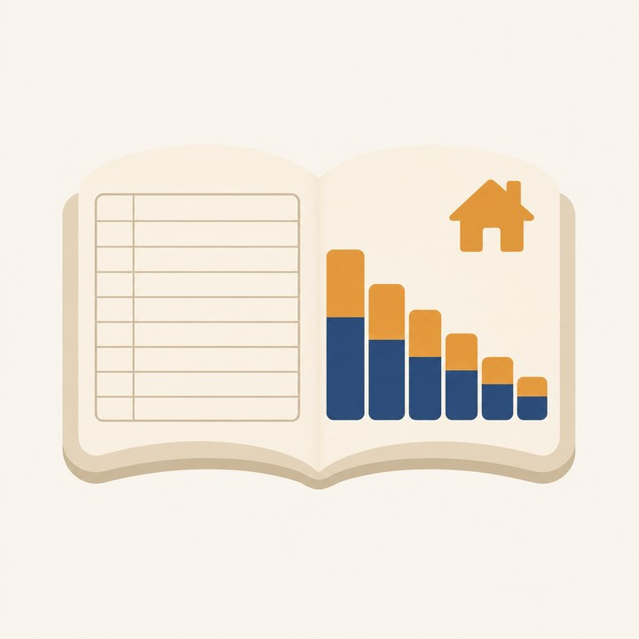

iPhone・iPad・Android のローンの帳面
借入額と金利を入れると、
毎月の返済と利息の合計。
住宅ローン・車のローン・教育ローンの借入額・金利・年数・返済方式を入れると、毎月の返済・利息の合計・総支払額・完済の月と返済表がその場で出ます。繰上返済は期間短縮と返済額軽減を並べ、金利が上がったときの毎月も。借りる前なら、銀行の案を並べて比べられます。
App Store・Google Play で配信予定返済を記録して計算する帳面です。借入や申込みはできず、金利の予想もしません。返済額は銀行の返済予定表を正としてください。買い切りで全部の機能が使え、アプリ内課金・サブスクリプション・広告はありません。

こんな困りごとのために
繰上返済、どっちが得？
期間短縮と返済額軽減を横に並べて、減る利息・短くなる期間・そのあとの毎月を比べます。
金利が上がったら
次の回から +0.25%・+0.5%・+1.0% になったときの毎月の返済が、いつも見えます。
銀行の案を比べたい
借りる前の案を入れると、毎月・利息の合計・総支払額を横に並べ、利息がいちばん少ない案に印を付けます。
グラフが消えた
年ごとの元金と利息の棒で、利息の重さが見えます。返済表は毎月と年ごと、今月の行から開きます。
できること
| ローン | 住宅・車・教育・その他。借入額・始める月・年数（1〜50年）・金利（0.001% きざみ）・元利均等／元金均等・ボーナス払い |
|---|---|
| 見えるもの | 毎月の返済・利息の合計・総支払額・完済の月・残りの元金・返済表（毎月・年ごと）・年ごとの元金と利息の棒 |
| 試す | 繰上返済（期間短縮・返済額軽減）・金利の変更・金利が上がったら・銀行の案の比較 |
| データ | iCloud Drive の毎日の控え・控えのファイル・返済表の CSV・アカウントなし・解析と広告なし |
使い方・プライバシーポリシー・利用規約もご覧ください。